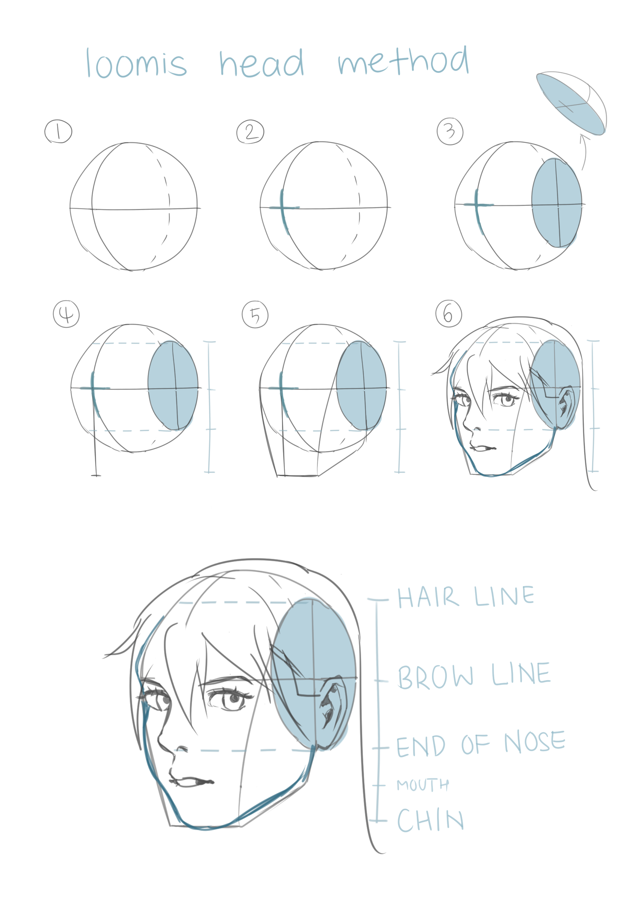

Metodo Loomis
Este método esta hecho en base a partir de un círculo y líneas divisoras y de ahí se derivan otros aspectos diferentes para recrear las facciones del rostro deseado.

Si te gusta el dibujo y quieres aprender facil, esta es la pagina indicada para ti, hay diferentes métodos que puedes aprender.
Este método esta hecho en base a partir de un círculo y líneas divisoras y de ahí se derivan otros aspectos diferentes para recrear las facciones del rostro deseado.